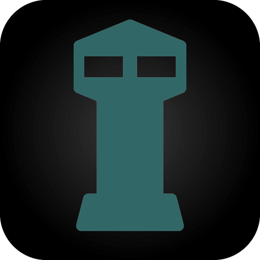

Vedette
1.1.13-4 · iOS 15 及以上分别设置每个 App、守护进程和 App 扩展的 CPU 用量与 运行优先级，在系统设置里就能调整。
Separate CPU limits and scheduling priority settings for apps, daemons and app extensions.
两种设置，可以分开用
- CPU 用量：设置允许使用多少 CPU，超出后可以限制速度或结束进程。
- 运行优先级（nice）：可选 −20～20，数值越小，优先级越高。默认不调整，也可以只改优先级，不打开 CPU 限制。
- 关闭后恢复：会先记住调整前的优先级，关闭或删除设置时尝试还原；如果被别的工具改过，不会强行改回去。
- 查看结果：能看到上次检查的时间和结果，也可以手动重试。页面显示的是上次检查结果，不是实时读数。
1.1.13-4 更新了什么
- 修复运行优先级设置可能整体失效的问题：旧版本留下的数据读不出来时，优先级会保存不上，所有目标都不生效，重启也无法恢复。本版本会自动清理这类旧数据并恢复正常。
- 修复点进守护进程列表、返回后再点进去会闪退的问题，App 扩展列表也作了同样的调整。
- 新增 App 扩展设置，可以单独限制扩展的 CPU 用量和调整运行优先级，也可以跟着所属 App 的设置走。
- 只打开运行优先级等单项设置的项目，也会排到列表前面，方便查找和修改。
- 再次打开列表时减少重复加载；刷新没成功时保留上次的列表，还可以手动重试。
- 运行优先级暂时没设置成功时，会再试几次；页面会显示上次检查的时间和结果。
- 调整了页面样式和提示文字。切换某项设置的“跟随 App”，不会顺手清掉其他设置。
下载与兼容性
优先在包管理器中刷新本源后安装，由客户端按环境选择对应架构。
依赖 PreferenceLoader、Substrate 兼容注入环境及 AltList；roothide 包另依赖 RootHide。
使用时请注意
运行优先级不等于 CPU 用量上限，也不等于保后台。CPU 限制太低或优先级调得太激进，可能反而卡顿；不要让多个工具反复修改同一目标。
内存上限和后台清理优先级的选项目前只保存设置，暂时不会改变系统行为。
卸载前会尽量恢复调整前的运行优先级，恢复失败只提示，不会挡住卸载；进程退出或重启后，这次调整也会失效。恢复记录会保留，必要时可以查看。